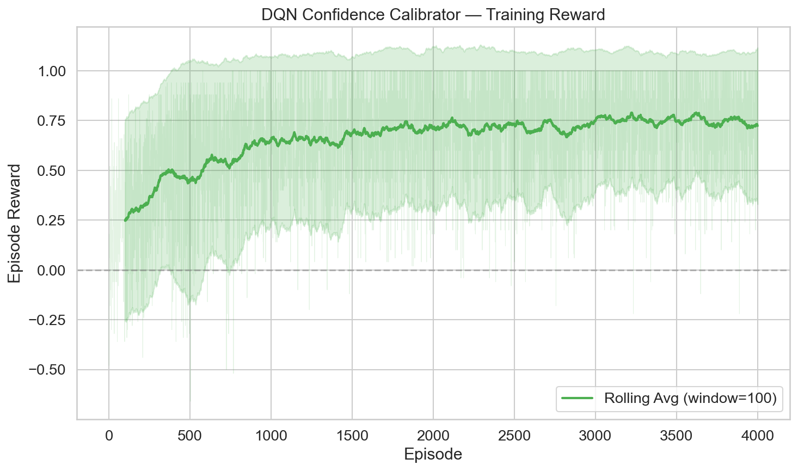
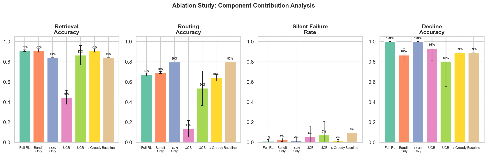
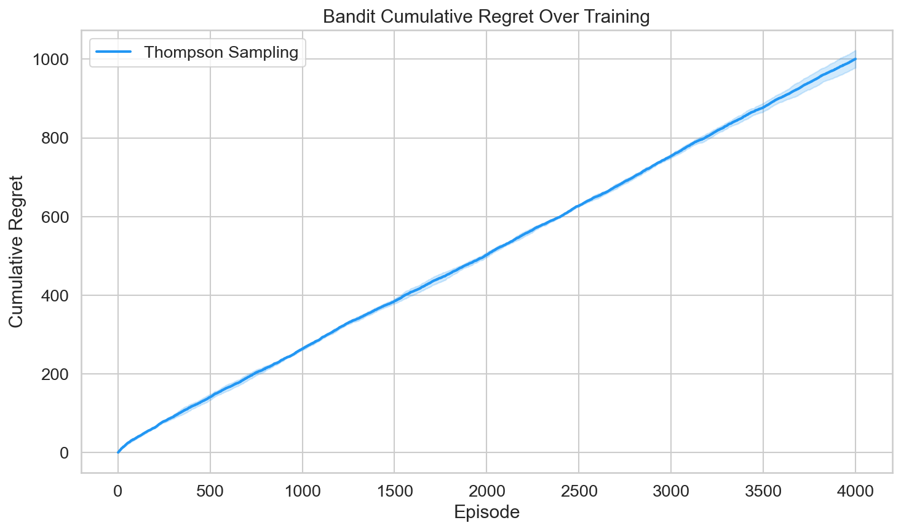
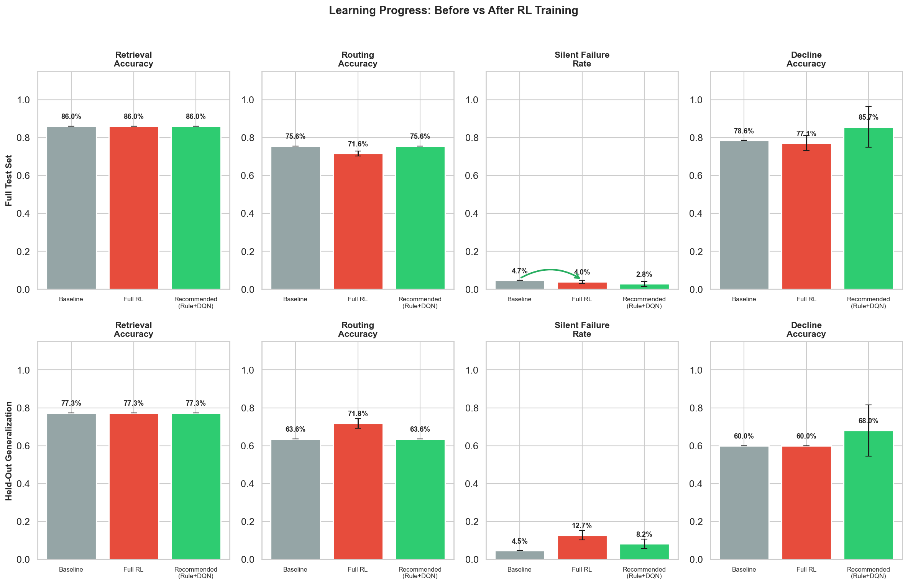

An RL-powered multimodal personal photo knowledge retrieval system that turns your photo library into a queryable knowledge base with confidence-graded answers.
Smartphone users accumulate thousands of photos—receipts, bills, food, screenshots, documents—but cannot search them by meaning or extract facts using natural language. PhotoMind addresses this gap by analyzing photos with GPT-4o Vision, building a structured knowledge base, and answering queries with confidence-graded answers and source attribution.
"How much did I spend at ALDI?" → Finds all 5 ALDI receipts, aggregates total with source photos
"Show me photos of pizza" → Finds food photos matching the visual description
"What type of food do I photograph most?" → Analyzes patterns across all 25 photos
"What was my electric bill?" → Correctly declines (no such photo exists in the library)
Hierarchical manager that classifies query intent (factual/semantic/behavioral) and delegates to specialists. Chief librarian of the knowledge base.
Scans photos and extracts structured knowledge via GPT-4o Vision: OCR text, entities, descriptions, confidence scores.
Searches the knowledge base using the RL-enhanced PhotoKnowledgeBaseTool with 4 search strategies and confidence grading.
Produces grounded answers with citation rules: every claim cites a source photo, every answer includes a confidence grade A–F.
Entity + OCR keyword matching for receipts, bills, documents. Supports aggregation queries with computed totals.
Keyword overlap scoring on photo descriptions for visual meaning and mood queries.
Corpus-wide pattern aggregation: image type distribution, entity frequencies, representative photos.
Dense vector retrieval via all-MiniLM-L6-v2 (384-dim, cosine similarity). Zero API cost, true semantic matching.
PhotoMind integrates two RL components to address the base system's weaknesses: ambiguous query routing and silent failures (confident-but-wrong answers).
A 4-arm contextual bandit routes queries to the optimal search strategy. Three exploration algorithms are evaluated:
Beta posteriors per (cluster, arm) pair. Bayesian exploration with posterior concentration. Best overall performance.
Upper confidence bound with exploration constant C=2.0. High exploration variance makes it unsuitable when paired with DQN.
Standard exploration with decay. Falls between Thompson and UCB in routing accuracy.
A Deep Q-Network over an 8-dimensional state space with 5 actions: accept_high, accept_moderate, hedge, requery, decline. The requery action is non-terminal—the agent can gather additional evidence from an alternate search strategy before committing to a confidence decision.
The PhotoMindSimulator pre-computes all search results for all strategies and queries, then serves them during training. Training 7 configurations × 5 seeds × 2,000 episodes completes in under 60 seconds on CPU. Live API training would cost ~$11,200.
Recommended (Rule+DQN) configuration
| Configuration | Retrieval | Routing | Silent Fail | Decline |
|---|---|---|---|---|
| Recommended (Rule+DQN) | 88.1% ± 0.0% | 78.6% ± 0.0% | 0.5% ± 1.3% | 100.0% ± 0.0% |
| Full RL (Thompson+DQN) | 90.5% ± 0.0% | 71.4% ± 0.0% | 0.0% ± 0.0% | 97.1% ± 7.9% |
| Bandit Only (Thompson) | 90.5% ± 0.0% | 71.0% ± 1.3% | 0.0% ± 0.0% | 85.7% ± 0.0% |
| UCB + DQN | 73.3% ± 3.9% | 10.5% ± 1.6% | 3.8% ± 2.6% | 97.1% ± 7.9% |
| Baseline (Rule-Based) | 88.1% ± 0.0% | 78.6% ± 0.0% | 2.4% ± 0.0% | 100.0% ± 0.0% |
Silent failure rate reduced from 2.4% (baseline) to 0.0% (Full RL) and 0.4% (Recommended). The DQN is the primary safety contributor.
Thompson Sampling complements DQN (0.0% silent failures). UCB compounds with DQN errors (3.8% — worse than baseline). Rule+DQN decouples the interaction risk.
14-query held-out set: 0.0% silent failures across all seeds, confirming learned policies generalize without degradation.
All RL training runs offline via PhotoMindSimulator. Zero API calls during training or evaluation. Full pipeline reproducible from clean checkout.




PhotoMind includes a React frontend with FastAPI backend featuring two query modes:
Direct Python execution with RL-enhanced retrieval. No API calls. Instant responses using bandit routing + DQN confidence grading.
Full CrewAI multi-agent pipeline with GPT-4o. Four agents collaborate to produce synthesized, cited answers.
Watch the 10-minute demo showing the system in action: YouTube Demo Video
CrewAI, PyTorch (CPU), sentence-transformers, scikit-learn, FastAPI, uvicorn
React 18, Vite, TypeScript, Tailwind CSS v4, Recharts, Lucide React
OpenAI API key required only for photo ingestion and Full query mode. All RL training is $0.
31-page LaTeX document covering system architecture, mathematical formulations, ablation study, statistical analysis, and ethical considerations.
Complete source code, documentation, setup instructions, test scripts, knowledge base, and trained RL models.
LaTeX-ready formulations for Thompson Sampling, UCB1, DQN Bellman equations, reward functions, and statistical tests.